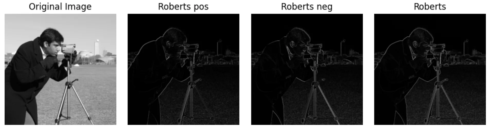

from skimage import data, filters
from matplotlib import pyplot as plt
import numpy as np
img = data.camera()
img_robert_pos = filters.roberts_pos_diag(img)
img_robert_neg = filters.roberts_neg_diag(img)
# ROBERTS_PD_WEIGHTS = np.array([[1, 0],
# [0, -1]], dtype=np.float64)
# ROBERTS_ND_WEIGHTS = np.array([[0, 1],
# [-1, 0]], dtype=np.float64)
img_robert = filters.roberts(img)
# out = np.sqrt(roberts_pos_diag(image, mask) ** 2 +
# roberts_neg_diag(image, mask) ** 2)
# out /= np.sqrt(2)
def plot(n,i,title,img):
plt.subplot(1, n, i+1)
plt.imshow(np.abs(img), cmap='gray')
plt.title(title)
plt.axis('off')
for i,(title,im) in enumerate(zip(
['Original Image','Roberts pos','Roberts neg','Roberts'],
[img,img_robert_pos,img_robert_neg,img_robert])):
plot(4,i,title,im)
plt.tight_layout()
plt.show()